♻ Circular Glass
Increasing the use of recycled glass as a sustainable raw material.
A collaborative research project, funded by the French National Research Agency (ANR), bringing together researchers, teachers, students, glass artists, and craftspeople to imagine and develop the next generation of sustainable glasses.
The project is inspired by the annual Glass Day, organized jointly by the Union for Glass Science and Technology (USTV) and the Lycée Jean Monnet – École Nationale du Verre.
Discover the Project3VER is more than a research project. It is a community where scientists, teachers, students, glass artists and professional craftspeople work together to imagine the future of glass.
Every year, this community meets during the Glass Day, a unique event organized by the Union for Glass Science and Technology (USTV) and the Lycée Jean Monnet – École Nationale du Verre. This annual meeting has become a place where scientific ideas, traditional know-how and education meet.
Building on this experience, the ANR 3VER project transforms these exchanges into collaborative research dedicated to developing innovative low-carbon glasses.
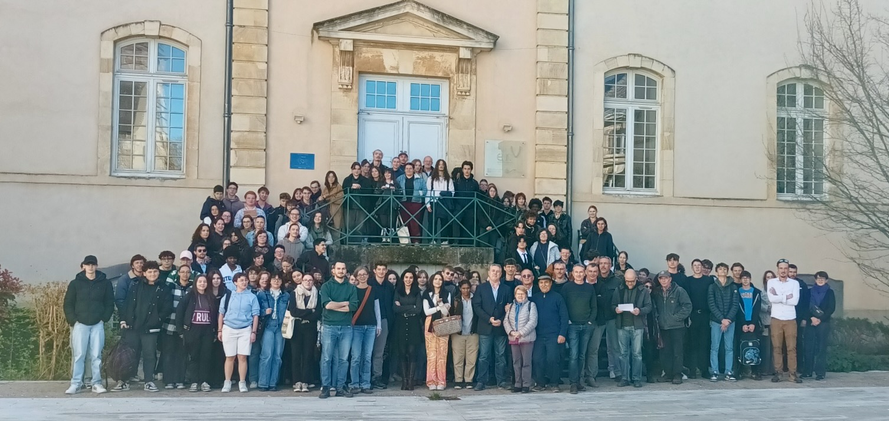
"Can we produce glass with a much lower carbon footprint while preserving traditional glassmaking?"
Unlike many research projects, 3VER did not begin in a laboratory.
During outreach activities at the annnual Glass Days in Yzeure, students asked a simple question that inspired researchers, teachers and professional glassmakers to work together.
This dialogue became the foundation of the ANR-funded 3VER project, demonstrating how scientific innovation can emerge from collaboration between education, research and craftsmanship.
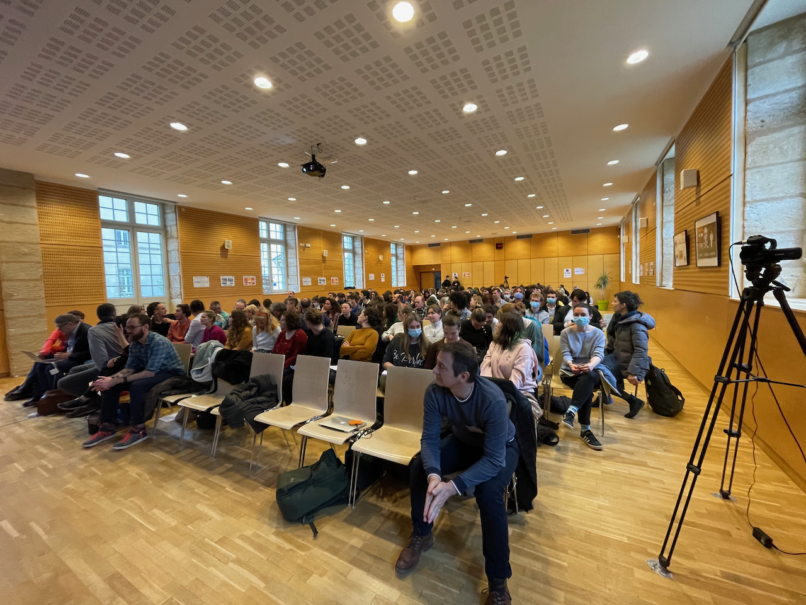
International Year of Glass. First meetings between researchers, teachers and students.
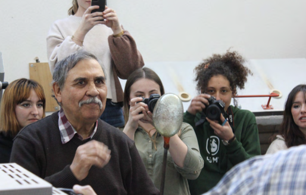
Historical glass compositions reproduced. Experimental measurements of viscosity and workability.
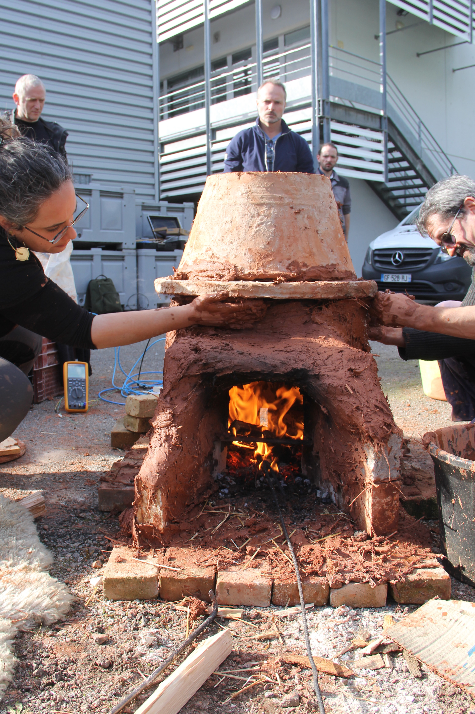
ANR funds the 3VER project. First low-carbon compositions developed.
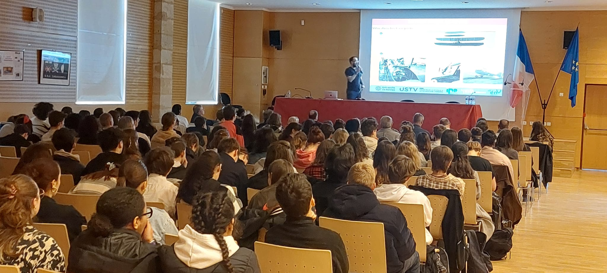
Students, researchers and glass artists develop and test new glass compositions.
Increasing the use of recycled glass as a sustainable raw material.
Exploring volcanic lavas as natural alternatives to carbonate minerals.
Investigating viscosity, thermodynamics and glass structure.
Bringing together scientists, teachers, students and glass artists.

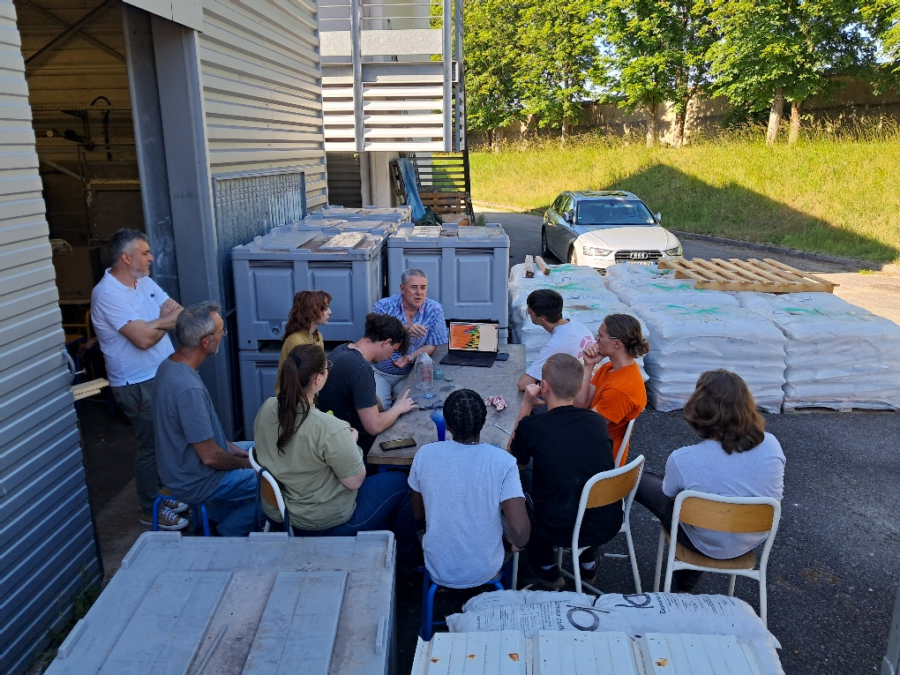
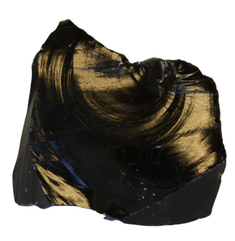
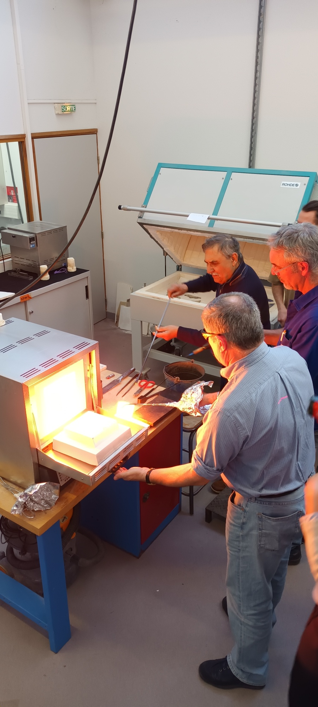
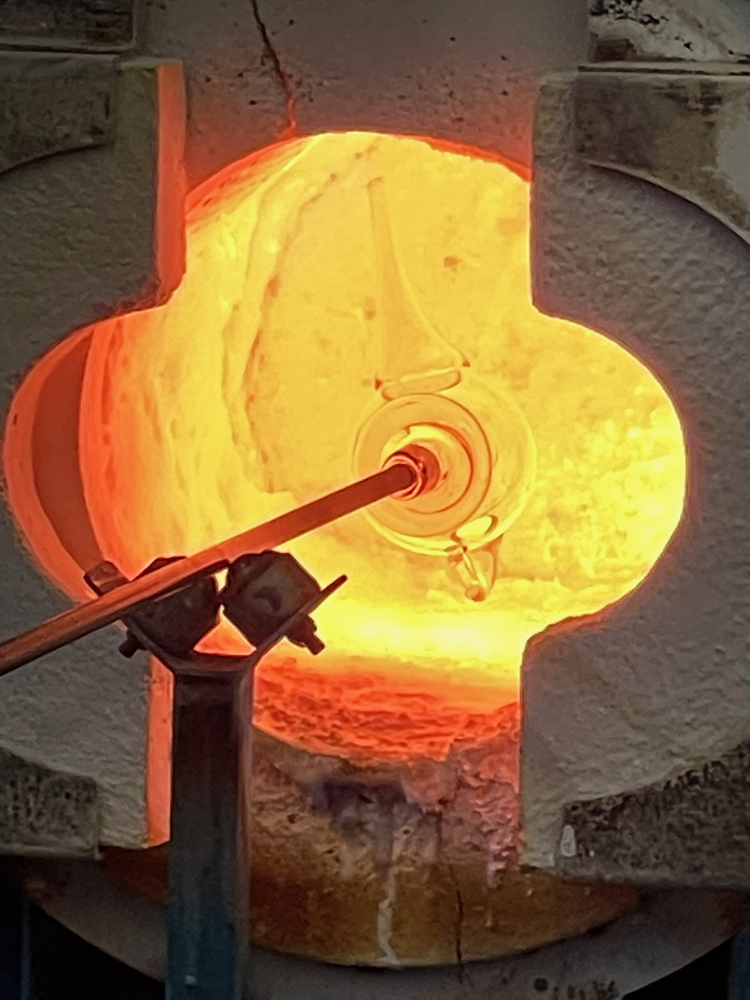
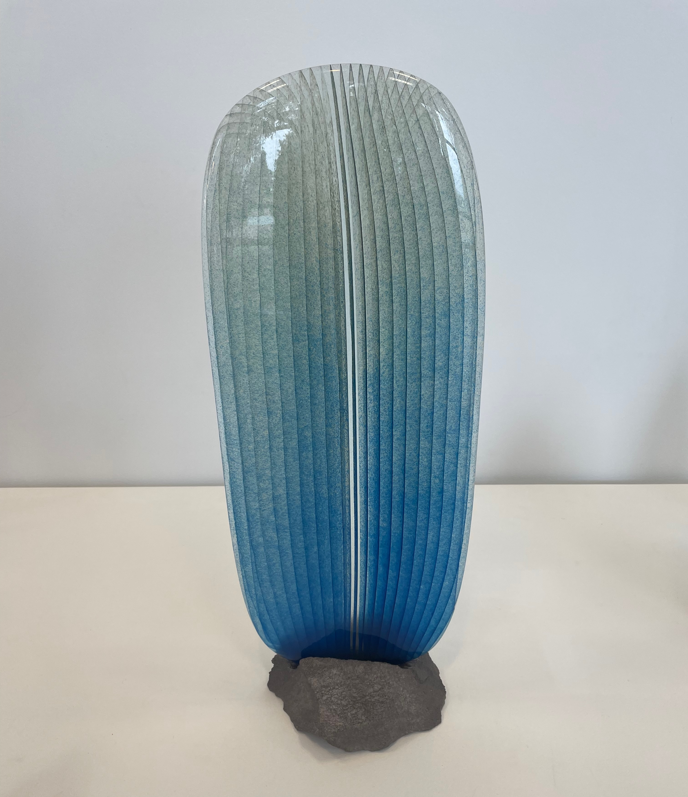
Lycée Jean Monnet - Ecole Nationale du Verre
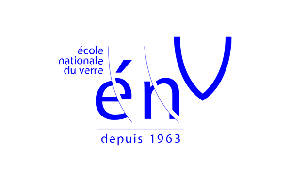
Institut de Minéralogie, de Physique des Matériaux et de Cosmochimie (IMPMC)
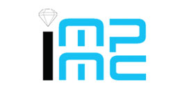
Institut de Physique du Globe de Paris (IPGP)
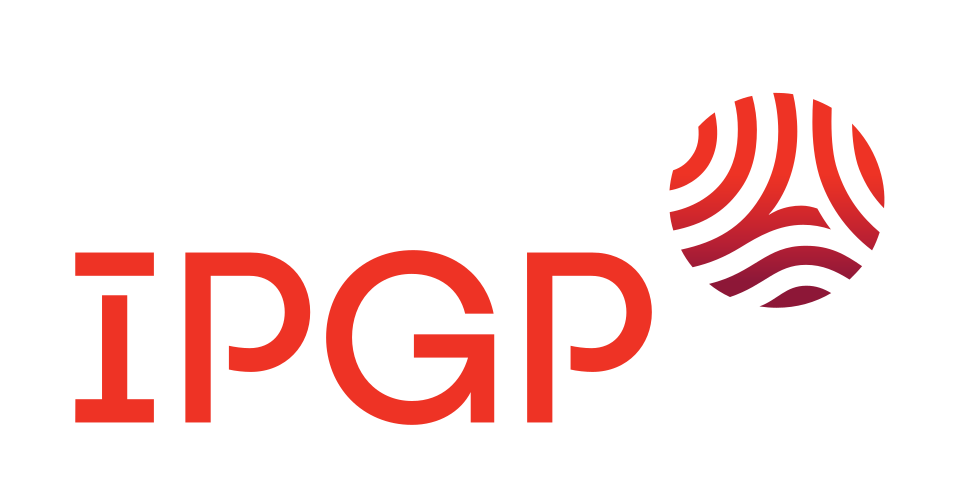
Institut de Recherche sur les Archéomatériaux (IRAMAT)
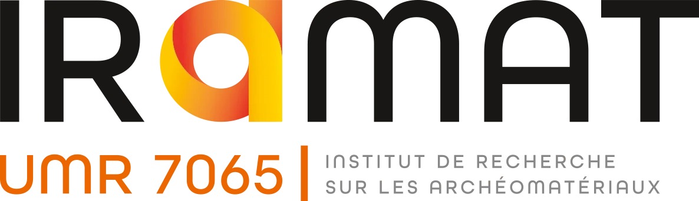
Successful demonstration of new low-carbon glass formulations.
Participation in the Pacific Rim Conference on Ceramic and Glass Technology.
Official launch of the ANR 3VER project.
Daniel R. Neuville
Institut de Physique du Globe de Paris
Laurent Cormier
Institut de Minéralogie, de Physique des Matériaux et de Cosmochimie
ANR Project ANR-23-SSAI-0026